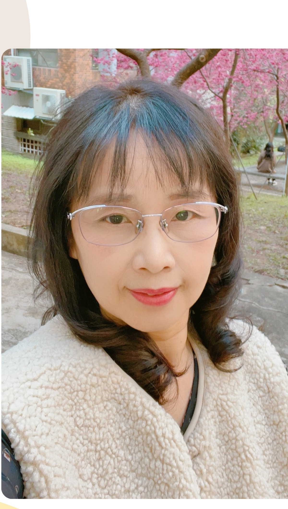

A Study on Mathematical Problem-Solving Process of Junior High School Gifted Students by Thinking-Aloud Method
運用放聲思考法探討國中資優生數學解題歷程
5th Asia-Pacific Conference on the Gifted (APCG 2018) · 第五屆亞太地區資優論壇

Head of Family · 大家長A Ph.D. in Special Education from National Changhua University of Education, with KDP-international certifications across bilingual education, multi-modal learning, and curriculum leadership — Principal Sung brings to Wanshing a rare combination: special-education depth, mathematics-curriculum expertise, and an international bilingual qualification that maps directly onto the work this rural Erlin campus is doing.
國立彰化師範大學特殊教育學系博士，並獲 KDP 國際認證之雙語教育、多元學習、課程領導等多項殊榮——宋雯卿校長為萬興國中帶來一個罕見的組合：特殊教育的深度、數學課程的專業、與國際雙語認證——三者都與這所二林偏鄉校正在做的事，直接對應。
I have always believed that every student is a unique existence. Education should not be a uniform production line — it should be the companionship and guidance that come from teaching each learner according to their nature.
我始終相信：每個學生都是獨一無二的存在，教育不該是相同的製造，而應是因材施教的陪伴與引導。
In curriculum design, I emphasise multi-modal learning and adaptive development, so that every student finds achievement and self-confidence at their own pace. In classroom practice, I value the power of co-teaching and professional learning communities, so that teachers no longer fight alone — they become each other's support and growth engine.
在課程設計中，我強調多元學習與適性發展，讓每位學生都能在自己的節奏中找到成就與自信；在教學實踐中，我重視共備、專業共群的力量，讓教師不再孤單奮鬥，而是成為彼此的支撐與成長動能。
I know deeply that the core of education lies in the building of relationships. Only when teachers and students trust each other can teaching reach the heart; only when administration and partners work in concert can a school march toward its vision.
我深知教育的核心在於關係的建立。唯有師生之間彼此信任，教學才能深入人心；唯有行政與夥伴齊心協力，學校才能朝向願景前行。
On the road of education — whether in classroom teaching, in administrative leadership, or in dialogue among educators — I hold a humble but steadfast heart, believing that education can change destiny. May I also become a light in the lives of children.
教育的路上，無論是教室裡的教學、行政崗位的領導、教學者間的對話，我都抱持著一顆謙卑而堅定的心，相信教育可以改變命運。也願成為孩子們生命中的一道光。
Across a decade Principal Sung's recognitions have moved upward through three tiers: county-level (Changhua Outstanding Special Education Teacher), national-level (Ministry of Education Reading Master, Teaching Excellence Award, Apricot Forest Fragrance Award), and international-level (KDP International — multiple certifications including Bilingual Education, English-Bilingual, Curriculum Leadership, and Multi-modal Learning).
宋校長的獲獎紀錄沿著三個層級往上推進：縣級（彰化縣特殊優良教師）→ 國家級（教育部閱讀磐石、教學卓越獎、杏壇芬芳獎）→ 國際級（KDP 國際認證多項獎項，含雙語教育、英語雙語、課程領導、多元學習效能）。
Principal Sung's published research focuses on the intersection of gifted education, special education, and the 12-Year Curriculum Guidelines for compulsory schooling — with particular attention to mathematical problem-solving and new-immigrant students. Selected presentations at international academic conferences:
宋校長的學術發表集中於資優教育、特殊教育、與十二年國教課綱的交集——特別聚焦於數學解題歷程與新住民學生。以下為國際學術研討會選錄：
That is the closing sentence of the philosophy Principal Sung wrote in her own hand for the school's Principal's Office page. It is also the most honest one-line answer to the question "Why this principal, at this school, at this time?" — and the lens through which every other line on this site is meant to be read.
這是宋校長親筆寫在學校官方校長室頁面的教育理念結句，也是對「為什麼是這位校長、在這所學校、在這個時間點」最誠實的一行回答——也是本網站其他每一行內容應該被閱讀的角度。